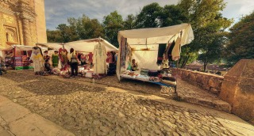
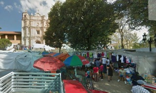
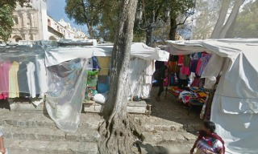
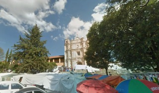
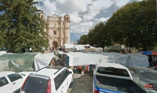

Es el punto de referencia que explica mejor la historia de san cristóbal de las casas, no fue la primera en construirse, ya que se contruyó a finales del siglo XVII, sin embargo resalta por la relevante actividad que desempeñaron sus moradores en el méxico colonial.
Hoy en día en la plazuela de santo domingo podemos encontrar trajes regionales, artesanias entre otras cosas que son símbolo de la visita a la ciudad.
Se encuentra ubicado en la Avenida 20 de Noviembre y esquina escuadrón 201.
Si usted se encuentra ubicado en la plaza de la paz viendo de frente hacia la catedral puede caminar hacia su izquierda pasando como referencia encontrará la Zapateria Catedral y Frente a este el Restaurant VIA VAI entre estos dos lugares encontrará el andador eclesiástico camine sobre el andador hasta llegar al final del andador, justo enfrente encontrará la plazuela de santo domingo.
En el lugar usted puede realizar actividades como:
* Fotografía
* Asistencia a parques públicos
* Compra de artesanías
* Etnoturismo
* Visita a museos
* Visita a iglesias
* Vusita a monumentos





posicione el mouse sobre las imágenes